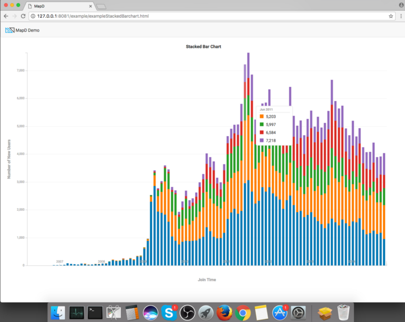
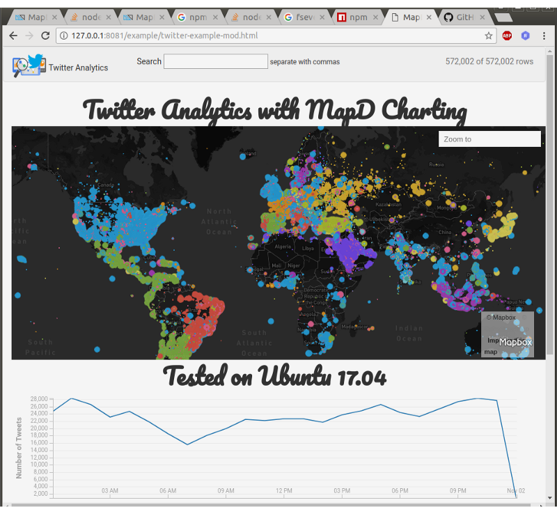
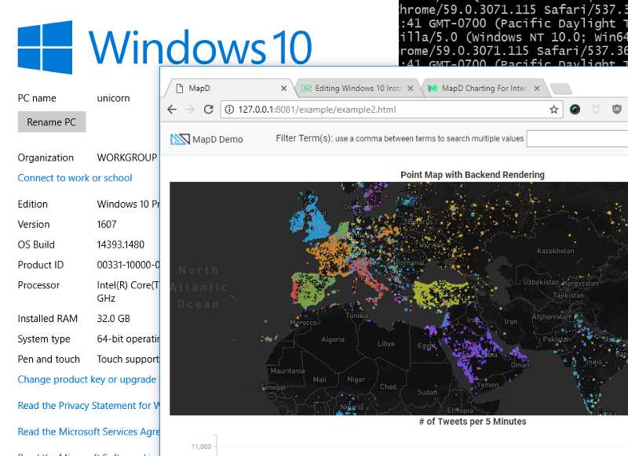
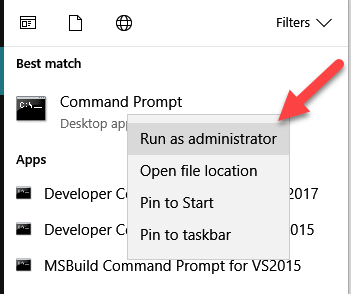
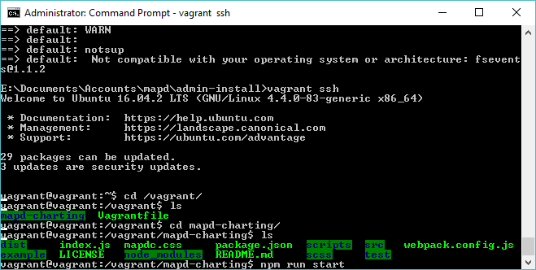
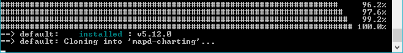
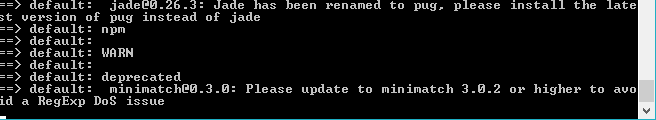
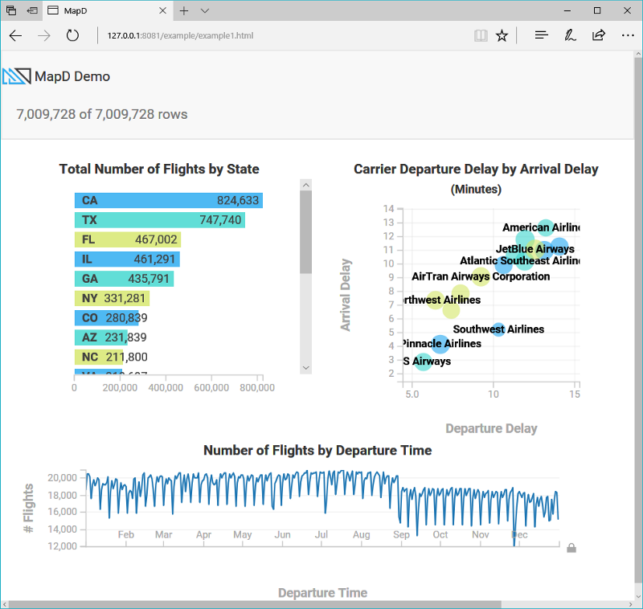

Installing MapD Charting
Mac OS X

Overview
Easiest install out of Mac, Linux, Windows. No problems with minimal installation required.
npm install #downloads all dependencies and devDependencies
npm install mapbox-gl@https://github.com/mapd/mapbox-gl-js/tarball/9c04de6949fe498c8c79f5c0627dfd6d6321f307 #downloads mapbox peer dependency
npm run start
Community tested configurations
- node v6.11
- Mac OS X 10.12.5
- Xcode from Apple App Store
Linux

Overview
Easy install if you use node 5.12.0. Set your node version with nvm or n.
Community tested configurations
- node 5.12.0
- Ubuntu 17.04
Windows 10

Overview
You'll need to install some additional programs and libraries. Works great after you install these components:
- bash to run script npm run start (which you probably have installed with git bash)
- Windows SDK 8.1 (you need this version, not Windows 10 SDK)
- You may also need to install Visual Studio for the build tools
- Node 7.x or below (not node 8, which is the most recent version)
- Python 2.7x 64 bit
In addition to the components above, you should also install the following manually from the command line:
- install node-gyp globally (You'll see it in the warnings.
npm install -g node-gyp) - install node-sass manually (
npm install node-sass)
Tips
As the PATH on git bash and the DOS command prompt are different. You may need to run
some of the scripts from either DOS or Powershell. You need to run npm run start from bash.
Community Installation Notes
Vagrant Dev Containers

Vagrant is popular with developers and people involved in DevOps. It allows you to install MapD Charting inside a Linux VM and use development tools on your workstation. For example, you can install MapD Charting on Windows inside of a Linux VM and then use Visual Studio on Windows to develop a MapD Charting application.
Install Steps
- Install VirtualBox
- Install Vagrant
- Copy Vagrantfile into your development folder
- Provision MapD Charting VM with
vagrant up - ssh into VM with
vagrant ssh - cd in
/vagrant/mapd-charting/and runnpm run start
Install Tips
On Windows, you must run the Command Prompt as Administrator.

After you ssh into the VM, your files will be in /vagrant/mapd-charting.

The install with vagrant up takes 10-20 minutes. The installation script will appear to
have no movement during several sections.
Cloning the mapd-charting repository took 4 minutes. There's no status report from the script during this stage. It will look like the screen below for 4 minutes.

There will be many messages that say, WARN. You can fix these laters when you're developing your application. The warning messages did not appear to impact the demos. The script stayed on the screen below for several minutes before moving on. There is no status update during that time.

Accessing Linux Files from Windows
Files placed in /vagrant/ inside the Linux VM will be visible from
inside the Windows directory you started Vagrant from.

You can now open your MapD Project folder in an IDE such as Visual Studio 2017.

Browser Access to MapD Visualization Projects
Use the browser on your workstation. For example, point Microsoft Edge
on Windows to http://127.0.0.1/example/.

In this workflow, you are using your Windows IDE and your Windows browser to edit and view the MapD Charting application running on Linux.
Once the application is ready for public testing, move it to something like AWS running Linux.
For more information on Vagrant configuration and workflows, refer to the Vagrant documentaion.